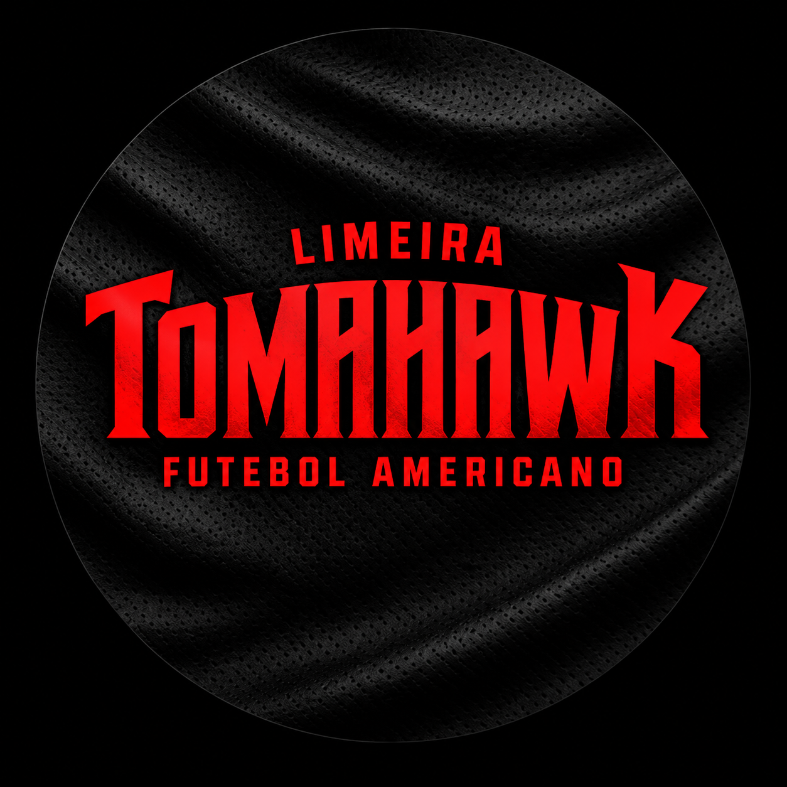

2011–2016 — Limeira Tomahawk
Nome original do time desde a fundação, usado nos primeiros anos de competição no futebol americano tradicional.
Esta página reúne a trajetória do Limeira Tomahawk. Alguns registros ainda serão adicionados conforme forem organizados pela equipe — os espaços abaixo estão marcados para preenchimento futuro.
O Limeira Tomahawk é uma equipe de futebol americano de Limeira/SP, ativa desde 2011. Ao longo de sua trajetória, o time já competiu no futebol americano tradicional (full pads) e hoje disputa o flag football, modalidade com menos contato físico e cada vez mais forte no Brasil.
O nome Tomahawk remete ao machado historicamente usado por povos indígenas norte-americanos — um objeto carregado de significados de força, tradição e encontro entre pessoas. É nesse espírito que a equipe se apresenta: um time construído por atletas e voluntários da comunidade de Limeira, unidos pela disciplina esportiva e pela vontade de competir.

Como é comum no futebol americano amador brasileiro, o Tomahawk uniu forças com outras instituições de Limeira em diferentes momentos, o que também mudou seu nome oficial em competições ao longo dos anos — sem nunca deixar de ser o Tomahawk.
Nome original do time desde a fundação, usado nos primeiros anos de competição no futebol americano tradicional.
Nome adotado após a parceria com a Associação Atlética Internacional de Limeira, período em que o time competiu na SPFL.
Nome atual em competições, após a parceria com a AABB Limeira firmada entre o fim de 2024 e o início de 2025, período que também marcou a virada para o flag football.
A estrutura abaixo está pronta para receber as datas e fatos reais do Tomahawk. Cada item pode ser editado diretamente no HTML.
O Limeira Tomahawk inicia suas atividades a partir de um grupo de amigos e ex-atletas do extinto Limeira Angels, ainda sem foco em campeonatos oficiais.
O time ingressa na FEFASP (Federação de Futebol Americano de São Paulo) e disputa sua primeira partida oficial.
O Tomahawk consolida sua presença no futebol americano tradicional (full pads), disputando torneios como a Super Copa São Paulo e a Taça 9 de Julho contra equipes de todo o estado de São Paulo e de Minas Gerais.
Tem início a parceria com a Associação Atlética Internacional de Limeira. O time passa a competir como "Internacional de Limeira Tomahawk".
O Tomahawk ingressa na SPFL (São Paulo Football League) e conquista o título da Taça 9 de Julho 2018, vencendo o Empyreo Leme Lizards na final.
O time disputa a SPFL Diamante e avança até a fase nacional do BFA Acesso, chegando à semifinal do torneio.
Após um período sem registros de atividade competitiva em full pads, o Tomahawk retoma suas atividades e passa a disputar o flag football, com torneios locais realizados em seu próprio campo, no Jardim Morro Branco, em Limeira/SP.
Uma nova parceria institucional é firmada com a AABB Limeira. A equipe passa a competir como "AABB Limeira Tomahawk" e confirma presença no Campeonato Paulista de Flag Football 2025.
O Tomahawk segue ativo no flag football (modalidade 8x8), com treinos regulares em Limeira/SP. Esta seção reflete a informação pública mais recente encontrada em pesquisa; para dados mais atualizados sobre patrocínio, elenco e comissão técnica, fale diretamente com a equipe.
Dois projetos guiam o futuro do Tomahawk: o Flag X5, com início previsto para 2027, e o retorno do futebol americano tradicional (Full Pads), modalidade que o time já disputou entre 2011 e 2019. Saiba mais na página de Projetos.
Entre em contato com o Tomahawk e acompanhe de perto os próximos capítulos do time.